Gallery
Front-end studies. Every texture is generated in the browser. Plates marked with parameters can be edited on their own page.
Editable studies31
Newest first. Each opens its plate, where every parameter, ink and motion setting can be changed.
 TS-22Capsule system45 parameters·motion·pointer
TS-22Capsule system45 parameters·motion·pointer TS-19Arc bundles on a dashed globe23 parameters·motion·pointer
TS-19Arc bundles on a dashed globe23 parameters·motion·pointer TS-17Warped ring cells26 parameters·motion·pointer
TS-17Warped ring cells26 parameters·motion·pointer TS-16Stipple bank and dot burst40 parameters·motion·pointer
TS-16Stipple bank and dot burst40 parameters·motion·pointer ST-39Ripple field24 parameters
ST-39Ripple field24 parameters ST-38Robot on the line16 parameters
ST-38Robot on the line16 parameters ST-37Arc ledger24 parameters
ST-37Arc ledger24 parameters ST-36Riso road15 parameters
ST-36Riso road15 parameters ST-35Dotted flow17 parameters
ST-35Dotted flow17 parameters ST-34Screened pop21 parameters
ST-34Screened pop21 parameters ST-33Spray seascape16 parameters
ST-33Spray seascape16 parameters ST-32Noise atom20 parameters
ST-32Noise atom20 parameters ST-31Radial dither bloom19 parameters
ST-31Radial dither bloom19 parameters ST-28Two-ink woods16 parameters
ST-28Two-ink woods16 parameters ST-27Dithered candle22 parameters
ST-27Dithered candle22 parameters ST-25Membrane20 parameters
ST-25Membrane20 parameters ST-24Stipple wave20 parameters
ST-24Stipple wave20 parameters ST-23Stitch sampler11 parameters
ST-23Stitch sampler11 parameters ST-22Airbrush ribbon30 parameters
ST-22Airbrush ribbon30 parameters ST-21Disc stack24 parameters
ST-21Disc stack24 parameters ST-20Interference24 parameters
ST-20Interference24 parameters ST-15Phosphor cell23 parameters
ST-15Phosphor cell23 parameters ST-14Stipple gouache14 parameters
ST-14Stipple gouache14 parameters ST-13Grain nocturne21 parameters
ST-13Grain nocturne21 parameters TS-15Banknote engraving49 parameters·pointer
TS-15Banknote engraving49 parameters·pointer ST-11Gradient by number5 parameters
ST-11Gradient by number5 parameters ST-10Stirred mesh gradient1 parameter
ST-10Stirred mesh gradient1 parameter ST-09Glow nine4 parameters
ST-09Glow nine4 parameters TS-10Thermal blob field15 parameters·motion
TS-10Thermal blob field15 parameters·motion TS-06Riso three-plate separation31 parameters·motion
TS-06Riso three-plate separation31 parameters·motion TS-01Moiré from two ring screens13 parameters
TS-01Moiré from two ring screens13 parametersFigure plates39
Single figures lifted from pages across the work and rebuilt as plates, each with its own parameters.
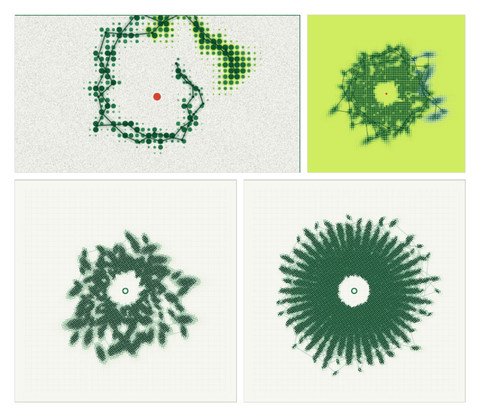
PL-01Green screen-tone blooms4 parameters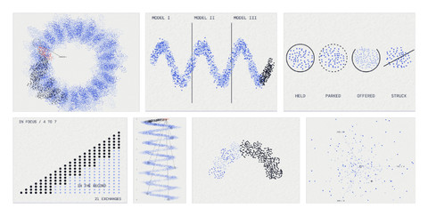
PL-02Records in dots4 parameters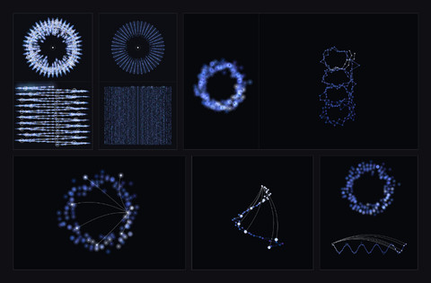
PL-03Rings on black4 parameters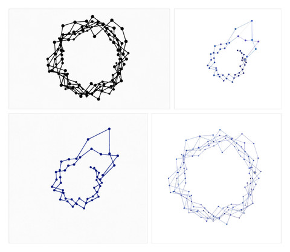
PL-04Node rings on white4 parameters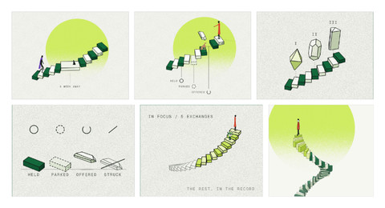
PL-05The helix step4 parameters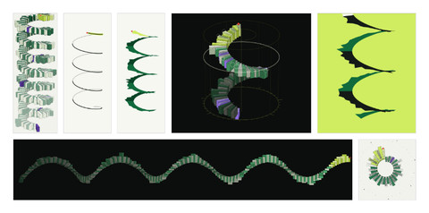
PL-06Helix forms4 parameters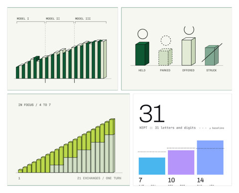
PL-07Counts as bars4 parameters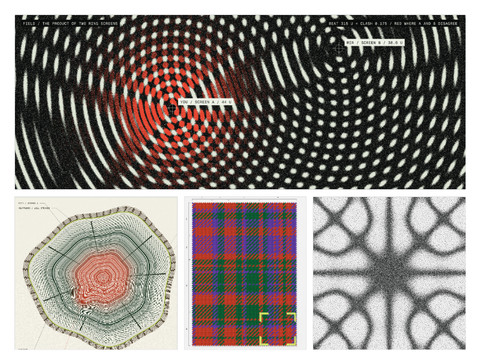
PL-08Resonance patterns4 parameters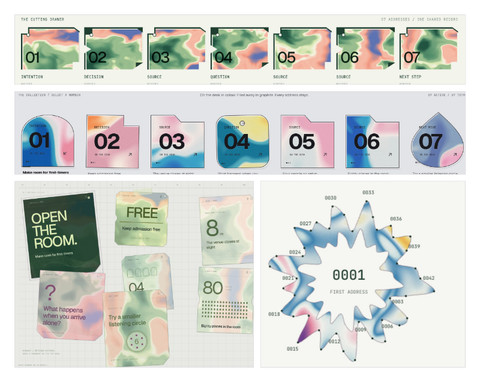
PL-09Gradient cards and die-cuts4 parameters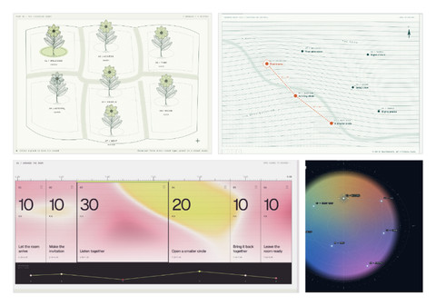
PL-10Garden, atlas, agenda, sphere4 parameters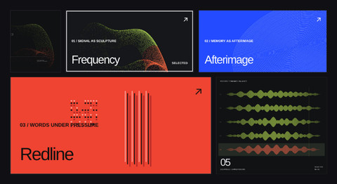
PL-11Signal cards4 parameters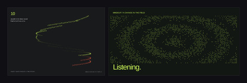
PL-12Fields of characters4 parameters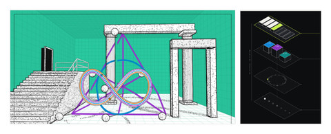
PL-13Constructions in perspective4 parameters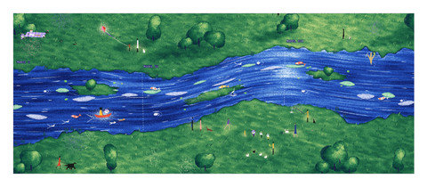
PL-14River and riverbed4 parameters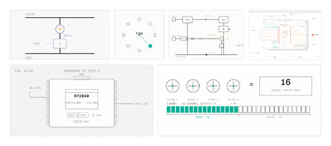
PL-15Pico carrier schematics4 parameters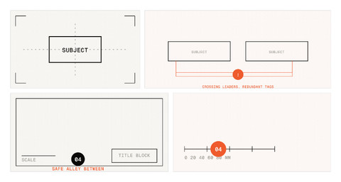
PL-16Leaders, frames and tags4 parameters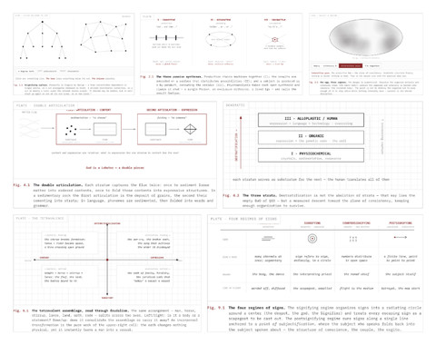
PL-17Diagrams of a reading, I4 parameters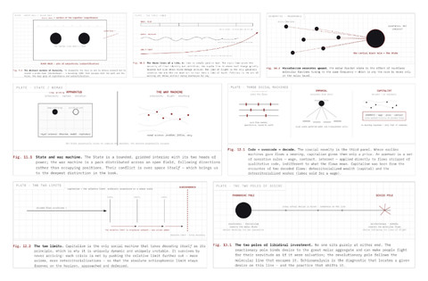
PL-18Diagrams of a reading, II4 parameters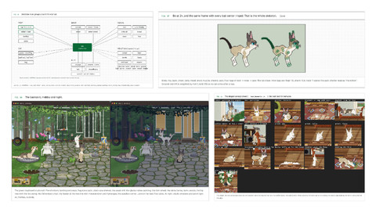
PL-19Desktop Bo, states and scenes4 parameters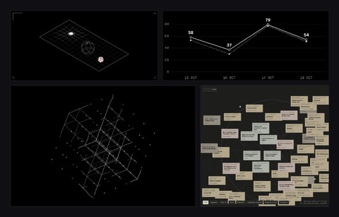
PL-20MASSIVE fields and counts4 parameters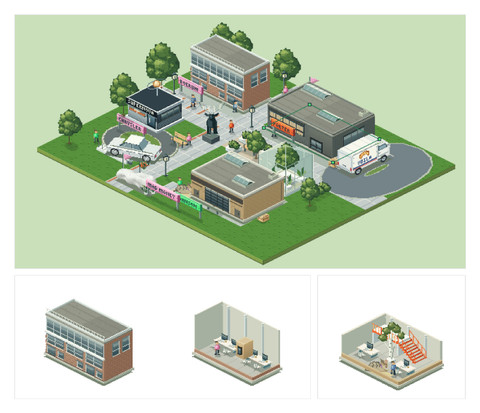
PL-21The park and its buildings4 parameters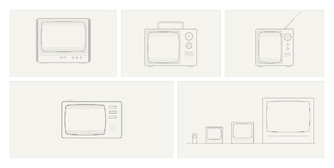
PL-22Cathode-ray receivers4 parameters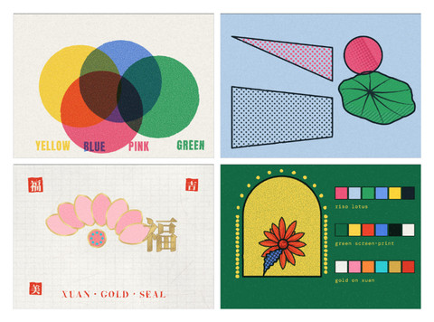
PL-23Keyline and ink, texture and color4 parameters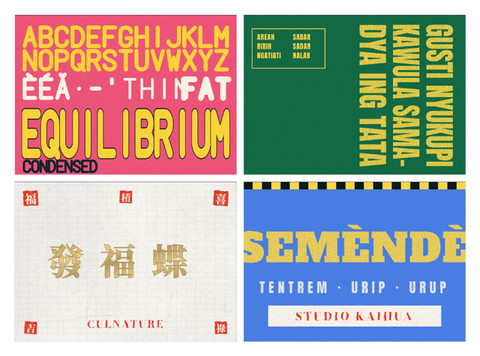
PL-24Keyline and ink, type4 parameters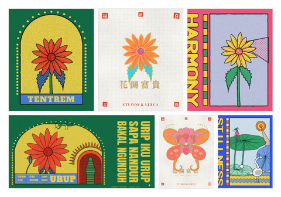
PL-25Keyline and ink, assembly4 parameters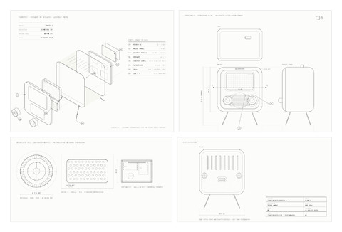
PL-26Orthographic subjects4 parameters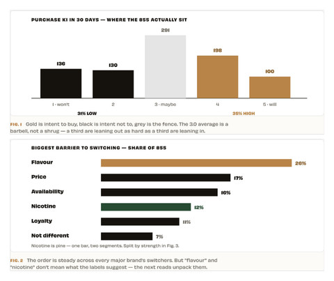
PL-27Bar charts in gold and black4 parameters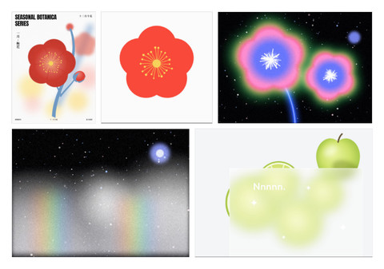
PL-28Soft focus, experiments4 parameters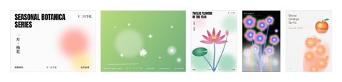
PL-29Soft focus, type and finals4 parameters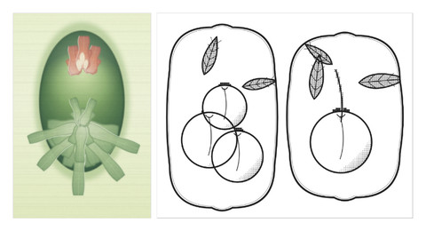
PL-30Line and wash4 parameters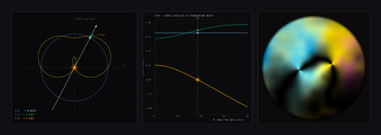
PL-31Optics, markers and plates4 parameters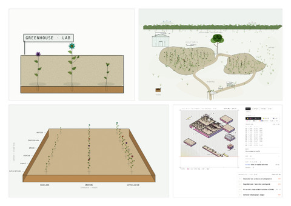
PL-32The garden drawn4 parameters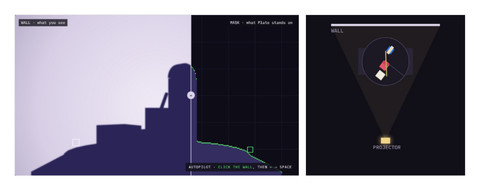
PL-33The cave rig4 parameters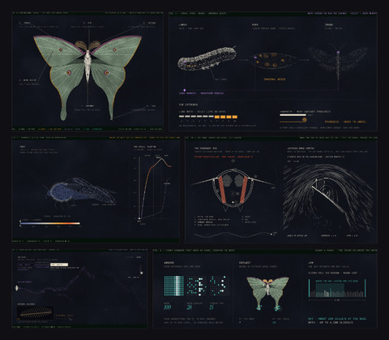
PL-34How a moth works, I4 parameters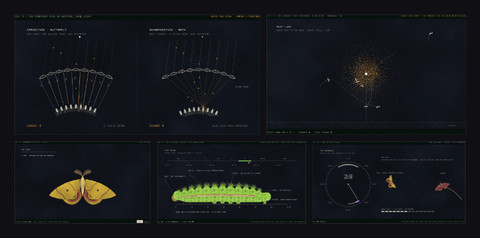
PL-35How a moth works, II4 parameters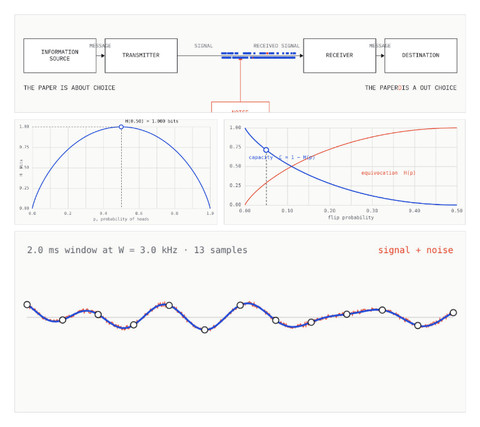
PL-36Information, drawn4 parameters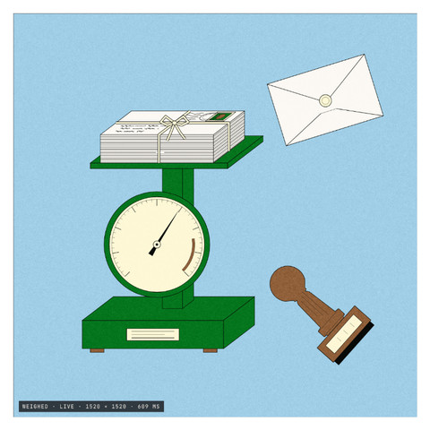
PL-37Weighed4 parameters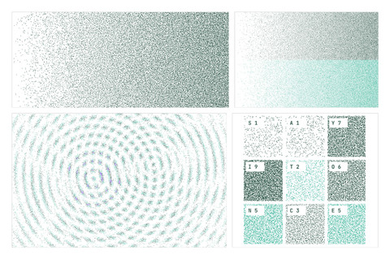
PL-38Counted fields4 parameters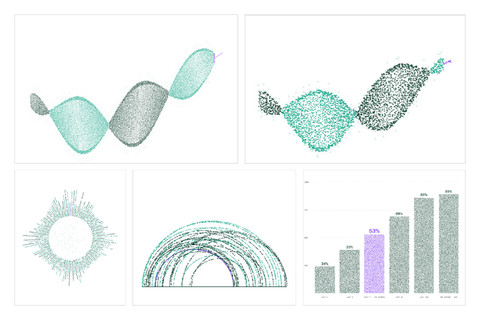
PL-39Counted forms4 parametersRead plates18
Measured rebuilds with a spec and no controls yet.
 ST-01Pencil keyline botanical
ST-01Pencil keyline botanical ST-02Stipple-ray bloom
ST-02Stipple-ray bloom ST-03Thermal die-cut chips
ST-03Thermal die-cut chips ST-04Chromolitho calendar plate
ST-04Chromolitho calendar plate ST-05Dimetric stipple loggia
ST-05Dimetric stipple loggia ST-06MASSIVE · source instrument
ST-06MASSIVE · source instrument ST-07MASSIVE · drawn geometry
ST-07MASSIVE · drawn geometry TS-02Four-ink spot illustration
TS-02Four-ink spot illustration TS-03Iridescent chrome on black
TS-03Iridescent chrome on black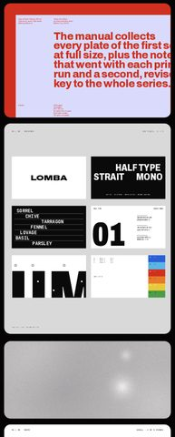
TS-04Stacked card scrollpointer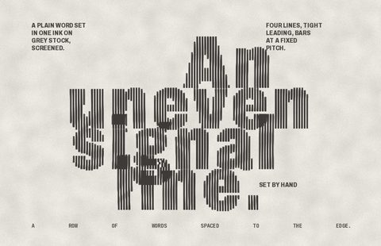
TS-05Vertical line-screen type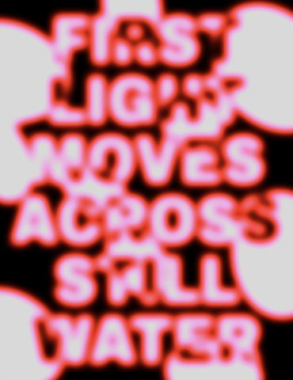
TS-07Gradient-mapped blur typemotion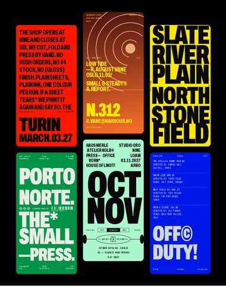
TS-08Flat-color card setpointer TS-09Grain gradient layers
TS-09Grain gradient layers TS-11Worn black box
TS-11Worn black box TS-12Perforated stamp
TS-12Perforated stamp TS-13ASCII glyph-field animationsmotion·pointer
TS-13ASCII glyph-field animationsmotion·pointer TS-14Deep Space Chroma · birefringencemotion·pointer
TS-14Deep Space Chroma · birefringencemotion·pointerPrinted matter15
Paper-and-ink studies on one page; each card opens its study on that page.